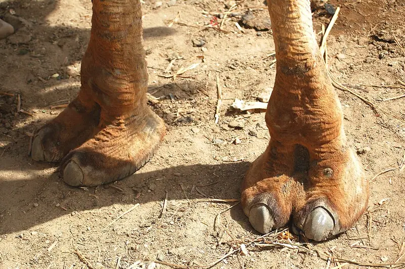
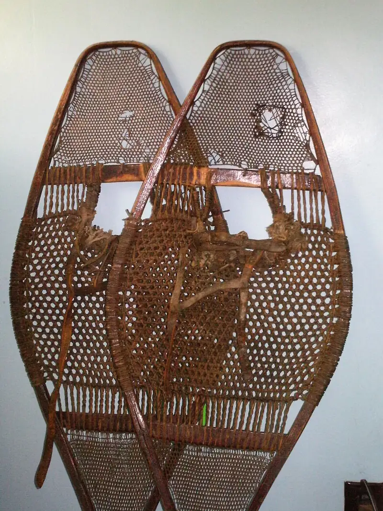
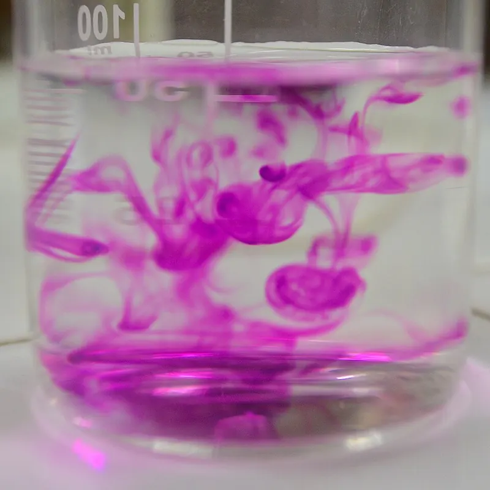

Cambridge Lower Secondary · Science 0893 · Stage 8
Pressure, Particles and Diffusion
How to calculate pressure, how particles cause pressure in gases and liquids, and how diffusion mixes gases and liquids — with worked examples, common mistakes and a Checkpoint-style quiz.
British & IGCSE › Checkpoint 8 › Checkpoint 8 Science — Complete Course
- Explain that pressure is caused by a force acting on an area, and calculate it with pressure = force ÷ area. (8Pf.05)
- Use the particle model to explain pressure in gases and liquids (no calculations needed). (8Pf.06)
- Describe diffusion in gases and liquids as the mixing of substances caused by the movement of their particles. (8Pf.07)
1. Key words
| Word / phrase | Meaning / use |
|---|---|
| pressure | الضغط — the force acting on each unit of area |
| area | المساحة — the size of a surface, in m² or cm² |
| pascal (Pa) | باسكال — the unit of pressure; 1 Pa = 1 N/m² |
| particle | جسيم — a tiny piece of matter (atom or molecule) |
| collision | تصادم — when a particle hits another particle or a wall |
| gas pressure | ضغط الغاز — caused by gas particles hitting the walls of their container |
| depth | العمق — how far below the surface |
| compress | يضغط / ينضغط — squash into a smaller volume |
| diffusion | الانتشار — particles mixing and spreading out because they move randomly |
| concentration | التركيز — how many particles of a substance are in a space |
| random | عشوائي — in any direction, with no pattern |
2. What is pressure?
Press your palm on a balloon and nothing happens; press a pin on it with the same force and it bursts. The force is the same — what changes is the area it acts on. Pressure tells us how concentrated a force is: how much force acts on each square metre (or square centimetre) of surface.
pressure = force ÷ area (p = F ÷ A). Force in newtons (N), area in m² → pressure in N/m², also called pascals (Pa). Area in cm² → pressure in N/cm².
| Pressure is… | because the area is… | Examples |
|---|---|---|
| reduced (spread out) | large | snowshoes and skis; a camel's wide feet on sand; wide tractor tyres on soft fields; wide straps on a heavy school bag; building foundations |
| increased (concentrated) | small | sharp knives and scissors; needles and drawing pins; nails and studs on football boots; ice skates; a thin heel on a shoe |


Rearranging. Use a formula triangle with F on top and p × A underneath: force = pressure × area and area = force ÷ pressure.
Areas are in square units. To change m² to cm² multiply by 10 000 (1 m = 100 cm, so 1 m² = 100 × 100 = 10 000 cm²). So 1 N/cm² = 10 000 N/m² = 10 000 Pa. Use the area of the surface touching the ground — for a cuboid, length × width of the face it rests on, never the volume.
3. Pressure in gases: the particle model
In a gas the particles are far apart and move quickly and randomly in all directions. They keep colliding with the walls of their container. Each collision gives the wall a tiny push (a force). Billions of collisions every second, spread over the area of the wall, cause gas pressure. Gas pressure pushes in all directions — that is why a balloon is round.
| Change | What the particles do | Effect on pressure |
|---|---|---|
| more gas in the same container (pumping up a tyre) | more particles → more collisions with the walls each second | pressure increases |
| higher temperature (same container) | particles move faster → they hit the walls more often and harder | pressure increases |
| smaller volume (pushing in a syringe with the end blocked) | particles have less space → they hit the walls more often | pressure increases |
| going higher up a mountain | fewer air particles above you and around you | air (atmospheric) pressure decreases |
Gases can be compressed (squashed) because there are big spaces between the particles. You can push in the plunger of a blocked syringe full of air, but not one full of water.
4. Pressure in liquids
In a liquid the particles are touching but can move past each other. They also collide with the walls of the container and with any object in the liquid, so liquids exert pressure too. Three facts to learn:
- Pressure increases with depth. The deeper you go, the more liquid there is above pushing down. This is why a dam is built much thicker at the bottom, why divers' ears hurt in deep water, and why water spurts hardest from the lowest hole in a tank.
- Liquid pressure acts in all directions — down, up and sideways — because the particles move in all directions.
- Liquids cannot be compressed (almost), because the particles are already touching. So a push on one part of a liquid is passed on through the liquid. Car brakes and hydraulic lifts use this idea.
- الضغط = القوة ÷ المساحة، ووحدته باسكال (Pa) = نيوتن/متر² أو نيوتن/سم².
- نفس القوة على مساحة صغيرة ← ضغط كبير (السكينة الحادة، المسمار). على مساحة كبيرة ← ضغط صغير (أحذية الجليد، رجل الجمل).
- ضغط الغاز سببه تصادم جزيئات الغاز مع جدران الإناء. وفي السوائل الضغط بيزيد كل ما ننزل لتحت (العمق يزيد)، وبيأثر في كل الاتجاهات.
5. Diffusion
Spray perfume in one corner of a room and soon people on the other side can smell it, even though nobody has moved the air. This spreading is called diffusion. It happens because particles of gases and liquids are always moving randomly. As they move and bump into each other, the particles of the two substances intermingle (mix). Overall, particles spread from where there are many of them (high concentration) to where there are few (low concentration), until they are evenly mixed.
- Gases diffuse quickly: the particles move fast and there is lots of space between them (smells, perfume, a gas leak).
- Liquids diffuse slowly: the particles are touching and keep bumping into each other (a drop of ink or food colouring in water, a tea bag in a cup, a purple potassium permanganate crystal in water).
- Solids do not diffuse in everyday life: the particles only vibrate in fixed positions.
- Higher temperature → faster diffusion, because the particles move faster.
- Lighter particles move faster than heavier ones at the same temperature, so they diffuse faster.
- Even when the mixing is complete, the particles keep moving — the mixture just stays evenly mixed.
- Diffusion matters in living things: oxygen diffuses from the air in the lungs into the blood, and carbon dioxide diffuses the other way.

Investigating diffusion (working scientifically). Put one drop of food colouring into beakers of water at 20 °C, 40 °C and 60 °C, and time how long the water takes to become evenly coloured. Independent variable: temperature. Dependent variable: time to become evenly coloured. Control variables: volume of water, size of the drop, same colouring, no stirring, same size of beaker. Prediction: the hotter the water, the shorter the time, because the particles move faster. Risk: hot water can scald — handle the beakers carefully.
- الانتشار = اختلاط المواد بسبب حركة جزيئاتها العشوائية، من المكان اللي فيه جزيئات كتير (تركيز عالي) للمكان اللي فيه جزيئات قليلة — من غير تقليب.
- بيحصل أسرع في الغازات من السوائل (الجزيئات أسرع والمسافات بينها أكبر)، وبيكون أسرع لما الحرارة تزيد.
- مثال: ريحة البرفان بتوصل لآخر الأوضة، ونقطة الحبر بتلوّن المية كلها.
6. Worked examples
Worked example 1 — A box has a weight of 600 N. The area of its base is 1.5 m². Calculate the pressure it exerts on the floor. [2]
- pressure = force ÷ area
- = 600 ÷ 1.5
- = 400 Pa (or 400 N/m²)
Worked example 2 — Mona weighs 480 N. Each of her shoes has an area of 160 cm² touching the floor. (a) Calculate the pressure when she stands on both feet. [2] (b) What happens to the pressure when she stands on one foot? [1]
- (a) Area of two shoes = 2 × 160 = 320 cm². Pressure = 480 ÷ 320 = 1.5 N/cm².
- (b) The area halves (160 cm²), so the pressure doubles: 480 ÷ 160 = 3 N/cm².
- Common mistake: in (a), using the area of only one shoe.
Worked example 3 — A tractor has a weight of 60 000 N. To stop it sinking into a muddy field, the pressure on the ground must be no more than 40 000 Pa. What is the smallest total area its tyres must have? [2]
- Rearrange: area = force ÷ pressure (1)
- = 60 000 ÷ 40 000 = 1.5 m² (1)
- This is why tractors have very wide tyres.
Worked example 4 — A sealed can of air is heated. Explain why the pressure inside the can increases. [3]
- When the air is heated, its particles move faster (1).
- They collide with the walls of the can more often (1)…
- …and with more force each time, so the pressure increases (1).
- Common mistake: "the particles expand" or "the particles get bigger". Particles never change size — they move faster.
Worked example 5 — A drop of blue ink is added to a glass of water. Without stirring, the whole glass slowly turns pale blue. (a) Name this process. [1] (b) Explain why it would happen faster in hot water. [1]
- (a) Diffusion.
- (b) In hot water the particles move faster, so they mix (intermingle) more quickly.
Worked example 6 — Explain why a dam is built thicker at the bottom than at the top. [2]
- Water pressure increases with depth (1)…
- …so the water pushes hardest on the bottom of the dam, and the bottom must be strongest / thickest to withstand the greater force (1).
- Dividing area by force. Pressure = force ÷ area.
- Using a volume instead of an area, or forgetting that area is in square units (m² or cm²).
- Forgetting to add the areas when someone stands on two feet, or a vehicle has four tyres.
- Saying that particles "expand", "get bigger" or "get excited" when heated. They move faster.
- Saying gas pressure is caused by particles "pushing each other". It is caused by particles colliding with the walls.
- Thinking liquid pressure only pushes down. It acts in all directions.
- Describing diffusion as "particles moving from high to low" with no mention of random movement or mixing — and saying it needs stirring. Diffusion happens without stirring.
- Saying solids diffuse like liquids. In solids the particles only vibrate.
- Calculate pressure (often 3 marks): find the area (add feet or tyres), divide the weight by the area, give the unit (Pa, N/m² or N/cm²).
- Rearrange to find a force or an area.
- Explain an everyday design using area and pressure: knives, snowshoes, drawing pins, tractor tyres, bag straps.
- Explain gas pressure with particles: moving randomly, colliding with walls, more collisions → more pressure.
- Explain changes: pumping in more air, heating a sealed container, squashing a syringe.
- Liquids: pressure increases with depth (dams, divers, holes in a tank).
- Diffusion: name it, describe what you would see, explain with random particle movement, and say how temperature affects the rate.
Practice
- pressure = force ÷ area; units Pa (N/m²) or N/cm². Small area → large pressure; large area → small pressure.
- Gas pressure: moving particles collide with the walls. More particles, a higher temperature or a smaller volume → more collisions → more pressure.
- Liquid pressure increases with depth and acts in all directions; liquids can hardly be compressed.
- Diffusion: substances intermingle because their particles move randomly — fast in gases, slower in liquids, faster when hotter.
- Particles never get bigger when heated — they move faster.
All pages in this course
Start here
- Stage 8 Science: The Tests and How to Prepare
- Thinking and Working Scientifically: Models, Investigations and Analysing Results
Biology
- Joints and Antagonistic Muscles
- Blood and Its Components
- Breathing, Gas Exchange and Diffusion in the Lungs
- A Balanced Diet, Energy Stores and Lifestyle
- Aerobic Respiration
- Ecosystems, Bioaccumulation and Invasive Species
Chemistry
- The Structure of the Atom
- Purity, Concentration and Chromatography
- Word Equations, Exothermic and Endothermic Reactions
- The Reactivity of Metals
- Impure Products and Solubility of Salts
Physics
- Speed and Distance–Time Graphs
- Balanced and Unbalanced Forces, and Moments
- Pressure, Particles and Diffusion
- Reflection and Refraction
- Dispersion and Colour
- Magnetic Fields and Electromagnets
Earth and space
- The Earth's Magnetic Field and Earth's Resources
- Climate, Weather and Climate Change
- Galaxies and Asteroids
Practice tests